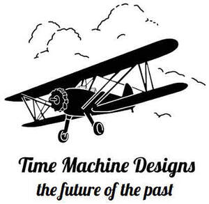

Trade Mark Journal No.2026/005 30 January 2026
UK00004325857 18 January 2026 (9,41)

- Class 9
- Software; Computer software; Collaboration software platforms [software]; Computer software packages; Enterprise software; Software for computers; Computer software development tools; Plugin software; System software; Workflow software; Multimedia software; Computer software applications; Software applications; Programming software; Downloadable computer software; Computer application software; Computer software platforms; Application software; Computer software programs; Graphics software; Downloadable software; Computer software applications, downloadable; Downloadable computer software applications; Simulation software; Smartphone software; Programs (Computer -) [downloadable software]; Computer programs [downloadable software]; Software suites; Gaming software; Embedded software; Computer graphics software; Educational computer software; Mobile software; Software development tools; Computer software [programmes]; Diagramming software; Utility software; Software for smartphones; CAD software; Computer game software; Animation software; Computer software for database management; Business technology software; Downloadable software applications.
- Class 41
- Education; Vocational education; Education and training; Academies [education]; Education and instruction; Services of schools [education]; Education services; University education services; Education, teaching and training; Academy services (Education -); Education academy services; Academy education services; Vocational education and training services; Training and education services; Education and training services; Provision of education courses; Higher education services; Provision of education and training; Provision of training and education; Providing of education; Entertainment, education and instruction services; Education services relating to vocational training; Education academy services for teaching art history; Education information; Computer education training; Primary education services; Adult education services; Residential education courses; Computer education training services; Boarding school education; Education and training consultancy; Further education; Technological education services; Online education services; Education services related to the arts; Career counselling relating to education and training; Educational services provided by institutes of higher education; Research in the field of education; Secondary school educational services; Education, entertainment and sport services; Educational and teaching services; Education in the field of computing; Vocational education for young people; Education in the field of computing science; Provision of education courses relating to computers; Educational services provided by institutes of further education; Education and training in the field of business management; Museum exhibitions; Presenting museum exhibitions; Museum services; Museums; Museum facilities (Provision of -) for exhibitions; Providing museum facilities; Provision of museum facilities; Providing museum facilities and services; Organization of exhibitions for cultural or educational purposes; Exhibitions (Organization of -) for cultural or educational purposes; Organization of exhibitions for cultural and educational purposes; Organisation of animal exhibitions for cultural or educational purposes; Organising of educational exhibitions; Organisation of exhibitions for cultural and educational purposes; Organisation of exhibitions for cultural or educational purposes; Organising of education exhibitions; Arranging of exhibitions for cultural or educational purposes; Organisation of guided educational tours; Organisation of exhibitions for educational purposes; Exhibition of video films; Museum facilities (Provision of -) for presentations; Art gallery services; Cultural, educational or entertainment services provided by art galleries; Organization of exhibitions for educational purposes.
Time Machine Designs Ltd